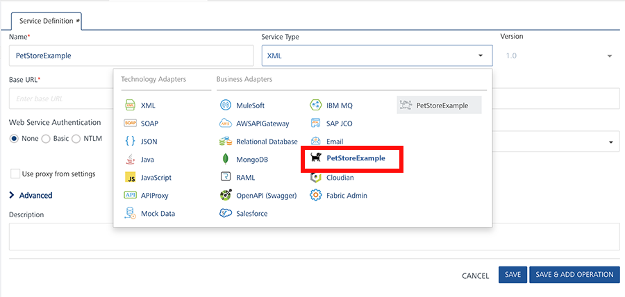
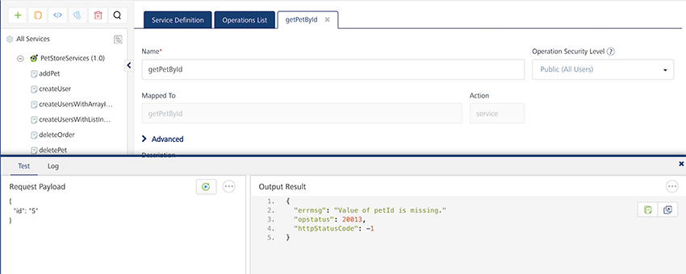
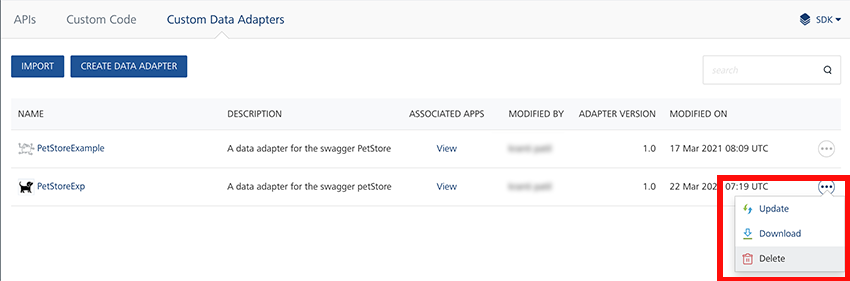

Custom Data Adapters on Volt MX Foundry
Volt MX Foundry Console supports the creation of custom data adapters. The custom data adapters uploaded into the Volt MX Foundry Console in APIÂ Management are supported in Integration and Object Services. An interface to upload, download, update, and delete data adapters is provided in the Volt MX Foundry Console. The data adapters are uploaded in a ZIP file format and stored in a workspace. Once the data adapters are uploaded successfully, you can create an integration or object service using the adapters .
Custom Data Adapters act as reusable services with a defined set of operations. These services work similar to any other service in the run-time environment.
When to use Custom Data Adapters
Consider the following scenarios in which you can use Custom Data Adapters.
Scenario: Adding an existing service definition.custom
Consider a scenario where you want to have a reusable service definition for your Volt MX Foundry applications, and you already have this definition available in a format compatible with Volt MX Foundry.
Instead of creating an API on Volt MX Foundry from a scratch, you can directly import your existing service definitions onto Volt MX Foundry as Custom Data Adapters. You can then use these Custom Data Adapters to create Integration or Object services.
Scenario: Creating a service by using a code written in RAML or Swagger
Consider a scenario where you have your API definitions in either RAML or Swagger, and this code exposes all the APIs that you want to use for your service.
Instead of creating an API with the service type as RAML or Swagger, you can directly upload the file to Volt MX Foundry and it will create a Custom Data Adapter for you. You can also add metadata for your service such as the Name, Version, and Logo.
Why use Custom Data Adapters?
Custom Data Adapters are readily available as connectors. Moreover, you can add any number of services while creating a Custom Data Adapter.
You can also create a Custom Data Adapter directly from your backend API definitions if they are compatible with Volt MX Foundry. The compatible definitions can be in an XML file that you can structure according to the Custom Data Adapter Zip Structure.
You can also upload your Custom Data Adapters to the VoltMX Marketplace, so that other users will be able to use it.
Getting Started
You can configure Custom Data Adapters from the API Management section, under the Custom Data Adapters tab.

There are two types of Custom Data Adapters you can add to the Volt MX Foundry console.
- RAML or Swagger Based - You can use this type of Custom Data Adapter if your backend can expose its API definitions to Volt MX Foundry. These API definitions should be in RAML or in Swagger. You can add these Custom Data Adapters by clicking on the CREATEÂ CUSTOMÂ DATAÂ ADAPTER button.
- VoltMX Foundry App Based - You can use this type of Custom Data Adapter if you have already configured any Volt MX Foundry services connected to your backend. These Custom Data Adapters should be in a structured zip archive. You can add these Custom Data Adapters by clicking on the IMPORT button.
Creating Custom Data Adapters
You can create Custom Data Adapters on Volt MX Foundry by uploading a RAML file or Swagger file. The file should contain all the API definitions that you want to expose to Volt MX Foundry.
To create a Custom Data Adapter, follow these steps:
- Navigate to the Custom Data Adapters tab in your API Management section.
- Click on the CREATEÂ CUSTOMÂ DATAÂ ADAPTER button. The Create Data Adapter dialog appears.
- Select the type of file you want to upload to Volt MX Foundry.

- Select RAML if you want to upload a RAML file.
- Select Open API if you want to upload a Swagger file.
- Drag and Drop a file into the upload window.
Alternatively, you can browse for a file on your system. -
Enter the details for the Custom Data Adapter such as Adapter Name, Asset Version, and Description.

- Adapter Name[Mandatory] - Name that Volt MX Foundry displays on the console.
- Asset Version[Mandatory] - Version number that Volt MX Foundry displays on the console. The version number follows the X.X.XX format.
- Min Version Required - Minimum version of Volt MX Foundry that can run the Custom Data Adapter.
- Image - Image that Volt MX Foundry displays for the Custom Data Adapter's icon.
- Adapter Description[Mandatory] - Description that Volt MX Foundry displays on the console.
- Upload to Marketplace after creation - Select this check box if you want to upload your Custom Data Adapter to the Volt MX Marketplace.
Note: Connection Parameters - You can configure dynamic connection parameters that you want to pass to the Custom Data Adapter.
These parameters show up when you select the Custom Data Adapter as a service type for your Integration service.

-
Click CREATE.
APIÂ Based Custom Data Adapter Example
Let us take a Swagger based example for a Custom Data Adapter that connects to the Swagger PetStore from Volt MX Foundry.
You can use a sample Swagger JSON for this example.
Follow the given steps to add the Swagger PetStore Custom Data Adapter.
- Configure your Custom Data Adapter based on the steps given in the Creating a Custom Data Adapter section. Let us name the adapter PetStoreExample.

- Create an Integration Service in your Volt MX Foundry application. Select your Custom Data Adapter in the Service Type list and click Save.
As we named our adapter PetStoreExample, click on PetStoreExample to use it in your service.
 - Click on ADDÂ OPERATION.

Note: You can configure the Authentication details if you want to enable Enhanced Identity Filters for your Service.
You can also configure the features in the Advanced tab if you want to add a custom code or enable throttling for your Service. For more information, you can refer to the Integration section of the Volt MX Foundry User Guide.
- Add Operations based on your requirements.

You can then make service calls to the Swagger PetStore from Volt MX Foundry.

Importing A Custom Data Adapter
You can manually create a Custom Data Adapter with all the respective metadata on your system and import it into Volt MX Foundry. This Custom Data Adapter should be a zip file with all the service definitions in XML files and all the properties in JSON files. You can find more information in the Custom Data Adapter Zip Structure section.
Follow the given steps to import an existing Custom Data Adapter to Volt MX Foundry.
- Navigate to the Custom Data Adapters tab in your API Management section.
- Click on the IMPORT button.
-
Drag and Drop a zip file into the upload window.
Alternatively, you can browse for a file on your system.Note: You can also import Custom Data Adapters from the VoltMX Marketplace by clicking the IMPORTÂ FROMÂ VoltMXÂ MARKETPLACE button.
-
Click IMPORT on the next window. This window also shows the metadata that you configured for your Custom Data Adapter.
You can then use this Custom Data Adapter to create services and operations in your Volt MX Foundry Apps.
Custom Data Adapter Structure
The structure of your Custom Data Adapter depends on whether it is RAML/Swagger based, or Foundry App based.
RAML or Swagger Based Structure
If your Custom Data Adapter is based on RAMLÂ or Swagger, your zip file should contain the respective file at the root location. Let us take the same example of the Swagger PetStore Data Adapter.
You can use a sample PetStore.zip file for this example.
Ensure that the root location of your zip contains the following files.
- properties.json - This JSON file should contain the metadata about the Custom Data Adapter.
For Example:
Click to view sample code
/* This file contains metadata about the Swagger PetStore Data Adapter */
{
"createdBy" : "VoltMX",
"propertiesVersion": "1.0",
"itemName": "PetStore",
"displayName": "PetStore",
"description": "PetStore",
"icon": "petstore.png",
"assetVersion": "1.0",
"createdMFVersion": "7.3",
"adapterType":"swagger",
/* You can also configure dynamic connection properties for your data adapter */
"connectionManager":
{
"connectionProperties":
[
{
"displayName": "Parameter One",
"description": "This is the first connection parameter",
"name": "ParamOne",
"order": 0
},
{
"displayName": "Parameter Two",
"description": "This is the second connection parameter",
"name": "ParamTwo",
"order": 0
}
]
}
}
Important: The value for the adapterType key depends on the type of file you use.
- raml - If the adapter is based on RAML.
- swagger - If the adapter is based on Swagger.
- Image [Optional] - You can include an image to use as the icon for the Custom Data Adapter.
Note: You need to insert the name of the image under the icon key of the properties.json file to ensure that Volt MX Foundry uses the image as the logo.
- RAML or Swagger File - This file should contain all your API definitions.
After you create all these files, your folder structure should look similar to the given image.

You can then compress these files into a zip file and import it into Volt MX Foundry.
Volt MX Foundry App Based Structure
If your Custom Data Adapter is based on Service Definitions from Volt MX Foundry, you need to create folders for each service that you want to include. Let us take a sample Google News Custom Data Adapter.
You can use a sample Googlenews.zip file for this example.
The root location of the zip files should contain the following files.
- properties.json - This JSON file should contain the metadata about the Custom Data Adapter.
For Example:
Click to view sample code
/* This file contains metadata about the Google News Data Adapter */
{
"createdBy" : "VoltMX",
"propertiesVersion": "1.0",
"itemName": "GoogleNews",
"displayName": "GoogleNews",
"description": "GoogleNews",
"icon": "icon.png",
"assetVersion": "1.0",
"createdMFVersion": "7.3",
"adapterType":"mf_app",
/* You can also configure dynamic connection properties for your data adapter */
"connectionManager":
{
"connectionProperties":
[
{
"displayName": "Parameter One",
"description": "This is the first connection parameter",
"name": "ParamOne",
"order": 0
},
{
"displayName": "Parameter Two",
"description": "This is the second connection parameter",
"name": "ParamTwo",
"order": 0
}
]
}
}
Important: The value for the adapterType key should be mf_app.
-
Image [Optional] - You can include an image to use as the icon for the Custom Data Adapter.
Note: You need to insert the name of the image under the icon key of the properties.json file to ensure that Volt MX Foundry uses the image as the logo.
-
Folders - You need to configure your services into sub-folders in your zip file's root location.
Click to view folder structure
The root location of your zip file should be similar to the given image.
- Ensure that the name of the first level folder matches with
your service name.
In the given example, NewsObject is the name of the Object Service, and newsService is the name of the Integration Service. - The second level folder's name should be services. The folder should contain your service definition file.
 Â Â
 Â
Once you've configured all the files and folders, you can compress it into a zip file and import it into Volt MX Foundry.
Managing Custom Data Adapters
You can manage your Custom Data Adapters from the API Management section under the Custom Data Adapters tab.
The Custom Data Adapters page on the console has a list of all the existing Custom Data Adapters and their metadata. You can view all the apps associated with any of the Custom Data Adapters. You can also view the Modified On and Modified By details on this page.

You have some additional options available under the ellipsis menu, that is the three dots menu on the right side, for every Custom Data Adapter.

- Upload to Marketplace - Publish the Custom Data Adapter to the VoltMX Marketplace.
- Update - Update the existing Custom Data Adapter. Clicking on this option will open a window to import a Custom Data Adapter.
- Download - Download the Custom Data Adapter as a zip file. The downloaded archive follows the structure mentioned in the Custom Data Adapter Zip Structure section of this document.
- Delete - Delete the Custom Data Adapter.